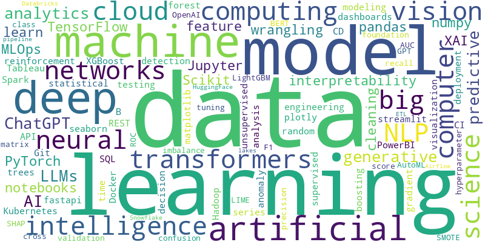

I'm a data scientist with 10 years of experience in data analytics, machine learning, and
statistical modeling. I specialize in extracting actionable insights from complex datasets using
tools like Python, SAS, SQL and Tableau.
My expertise spans a variety of industries, including retail, healthcare analytics, and
environmental data science. I enjoy developing predictive models, visualizing data, and solving
real-world problems through data-driven solutions.
This portfolio highlights some of my key projects where I've applied machine learning,
statistical analysis, and data visualization to drive impactful decisions. Thanks for visiting!
Experience
Research Statistician Developer | SAS Research & Development
May 2013 - May 2024
Developed and tested a demand forecasting model using machine learning algorithms - Random
Forests, Support
Vector Machines, and Gradient Boosted Models-as part of a solution bundled within the SAS Viya
platform, resulting
in a 12% improvement in short-term demand prediction accuracy.
Led the development of a unit testing framework for the forecasting model using Pytest,
automating 90% of test
cases and reducing manual intervention time by over 85%. This improved reliability, accelerated
testing cycles, and
ensured consistent model validation.
Developed and managed 50 complex data visualization projects using SAS Visual Analytics and
Python libraries,
transforming raw data into actionable insights through interactive dashboards, reports, and
flowcharts.
Optimized internal processes by applying k-means clustering using Python to identify
redundancies; collaborated with cross-functional teams to validate findings, which reduced
repetitive tasks by 10%, improved execution time, and led to adoption across multiple teams
after a company-wide technical presentation.
Projects
Welcome to my projects section! Here, you'll find a selection of data science and machine
learning projects that I’ve worked on. These projects span various domains, including credit
card fraud detection, customer segmentation, life expectancy analysis, and environmental
sustainability. Each project showcases my skills in building predictive models, data analysis,
and creating interactive dashboards. Feel free to explore the links for more details and source
code!
Regression
Life Expectancy Prediction
This project focuses on predicting life expectancy across countries using data from
the WHO Global Health Observatory API. It explores how socioeconomic, health, and
environmental factors contribute to variations in life expectancy. I built
regression models (Linear Regression, Random Forest) to identify key drivers and
trends, offering insights into global health disparities. The findings can help
inform data-driven policy decisions and highlight areas for targeted public health
interventions.
Key Tools & Techniques: Python, Pandas, Scikit-learn, WHO API, Data Visualization
(Matplotlib, Seaborn)
🔗 View Project
on GitHub
Classification
Credit Card Fraud Detection
This project focuses on detecting fraudulent credit card transactions using machine
learning classification algorithms. Using anonymized transaction data, I built and
evaluated models such as Random Forest, XGBoost, and Logistic Regression to identify
fraudulent patterns. The project addresses key challenges like extreme class
imbalance
and the need for high recall in fraud detection. Undersampling techniques were
applied
to handle the imbalance, enabling the models to effectively distinguish between
legitimate and fraudulent transactions.
Key Tools & Techniques: Python, Pandas, Scikit-learn, XGBoost, Undersampling, Data
Visualization (Seaborn, Matplotlib)
🔗 View Project
on GitHub
Cardiovascular Disease Prediction
This project uses machine learning to predict the presence of cardiovascular diseases
based on key risk factors including age, sex, blood pressure, cholesterol, and
glucose
levels. The goal is to support early detection and preventive care by building
accurate
predictive models. I trained and evaluated Logistic Regression, Decision Tree, and
Random Forest models, focusing on precision and recall due to the healthcare
context.
The project demonstrates how data-driven models can aid in identifying high-risk
individuals.
Key Tools & Techniques: Python, Scikit-learn, Pandas, Classification Algorithms,
Precision & Recall, Data Visualization
🔗 View Project
on GitHub
Data Visualization
CarbonScope: Visualizing Global CO₂ Emissions
This project explores carbon emission trends across countries and industries using
data retrieved from an API provided by the IMF Climate Data Portal. I built an
interactive dashboard using Streamlit to visualize CO₂ emissions over time, identify
top contributing countries, and highlight industry-level breakdowns. The project
empowers users to filter by country, year, and emission indicators to gain
actionable environmental insights.
Key Tools & Techniques: Python, Streamlit, Pandas, Matplotlib, Seaborn, REST API,
Data Transformation, Interactive Dashboards
🔗 View
Project
on Streamlit
🔗 View
sourcecode
Skills
Below is a snapshot of my technical skills across data science, programming, visualization, and
tools I've used extensively in projects and professional settings.
Programming & Scripting
- Python
- R (Beginner)
- SAS (Advanced)
- SQL (PostgreSQL, MySQL)
- Shell Scripting (Basic)
Machine Learning & Analytics
- Regression (Linear, Logistic)
- Classification (Random Forest, XGBoost, Decision Trees)
- Clustering (K-Means, Hierarchical)
- Model Evaluation (ROC, Precision/Recall, F1)
- Data Preprocessing & Feature Engineering
Data Visualization
- Matplotlib, Seaborn
- Streamlit
- Tableau
- SAS Viya, SAS Graphical Procedures
Tools & Platforms
- Git & GitHub
- Docker, Kubernetes (Basic)
- Jupyter Notebooks, VS Code
- SAS/Base, SAS Macros, SAS Viya, SAS Graphical Procedures
- REST APIs, WHO API, IMF API